See the intermediate steps
A video model predicts visual subgoals from the current observation and task instruction.
Policy-Initialized Local Optimization with Temporal subgoals
A distant goal tells the robot where to finish. Visual subgoals reveal how to get there,
and a policy prior gives each local search a useful starting point.
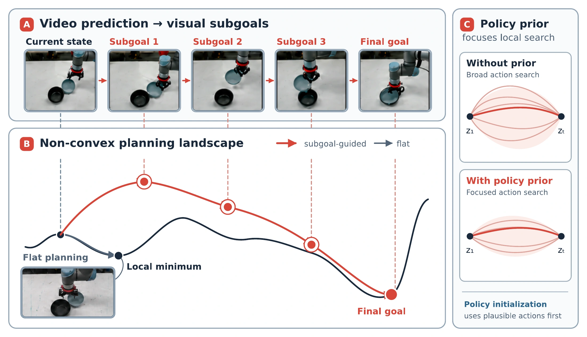
A video model predicts visual subgoals from the current observation and task instruction.
A learned policy initializes CEM around behaviorally plausible action sequences.
An action-conditioned world model evaluates candidates. The robot executes a short prefix and replans.
World-model planning for long-horizon manipulation is constrained by short reliable prediction horizons: a distant goal may provide little guidance for preparatory actions, while uninformed action sampling makes local optimization inefficient. We propose PILOT (Policy-Initialized Local Optimization with Temporal subgoals), which uses a video model to generate intermediate visual targets and a learned policy to initialize the Cross-Entropy Method (CEM). An action-conditioned world model refines candidate actions toward each target in a receding-horizon control loop.
Our primary evaluation fine-tunes Wan and π0 on the same 40 real-robot demonstrations. Across four UR5e manipulation tasks, PILOT achieves 68.8% success, compared with 55.0% without policy initialization, 13.8% for policy-only execution, and 0.0% for direct final-goal planning. These results show that visual subgoals learned from a small demonstration collection can support effective online control even when direct policy execution remains unreliable, with policy initialization further improving local search efficiency. Complementary simulation experiments show gains of 30 and 22 percentage points over direct execution of the same policy on long Push-T tasks and on LIBERO-10.
Three complementary models, connected by a closed-loop planner.
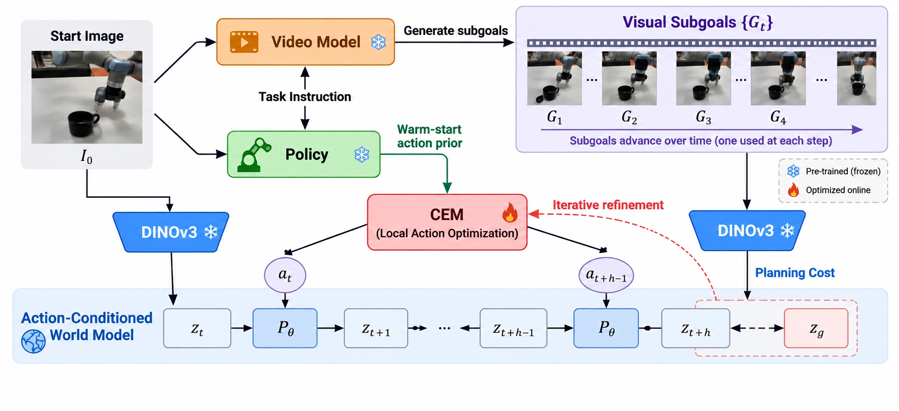
Generate a future video from the initial observation and language instruction. Select uniformly spaced frames as intermediate planning targets.
Use the policy’s action proposal as the initial CEM mean, then refine candidates against the current subgoal rather than executing the policy directly.
Minimize terminal latent distance to the target. Execute the first action, observe the new state, and repeat before advancing to the next subgoal.
Long-horizon tabletop manipulation on a UR5e with a fixed RGB camera.
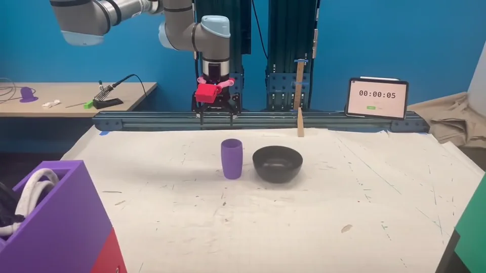
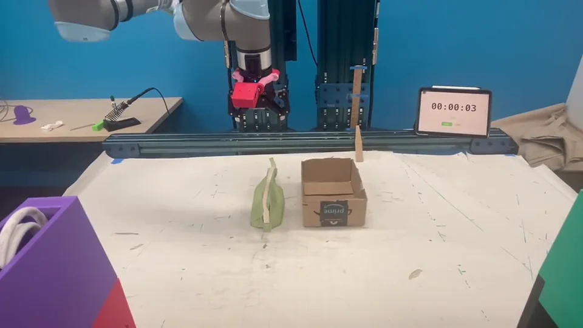
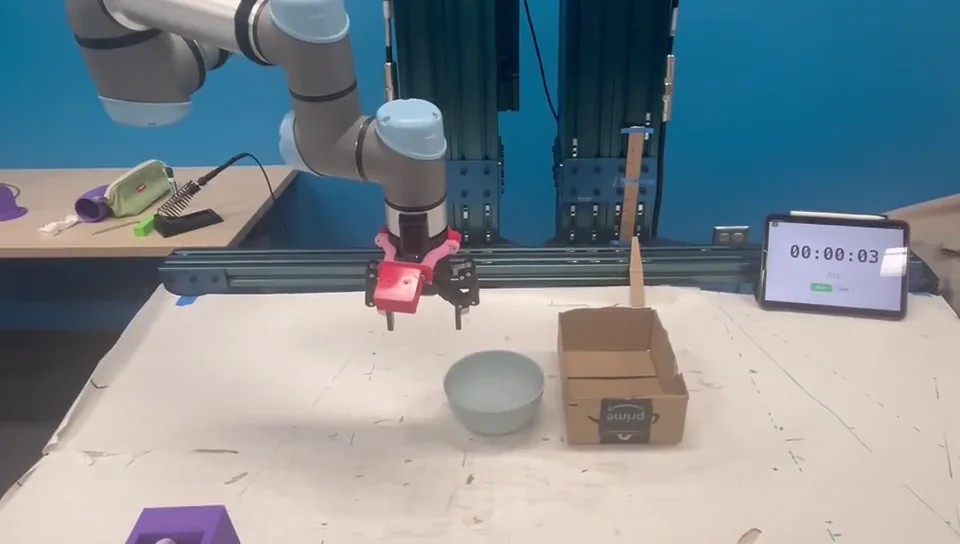
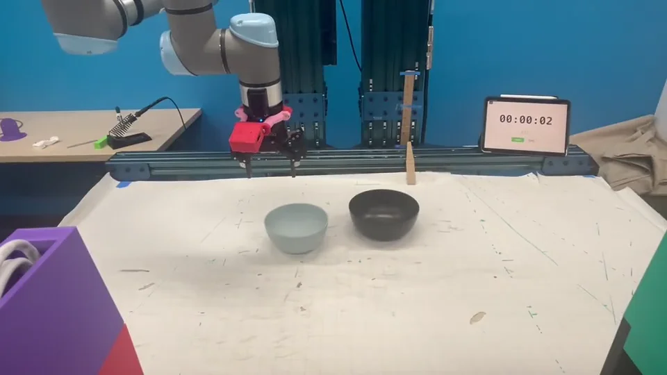
Real robot demonstrations shown at 4× speed. Select Enlarge for a larger player.
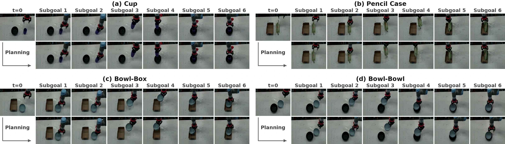
20 trials per task, 80 trials per method. All world-model variants share the same short prediction horizon.
Visual subgoals provide temporal guidance. Policy initialization adds a further 13.8 percentage points in average success.
| Method | Cup | Pencil Case | Bowl-Box | Bowl-Bowl | Average | 95% CI |
|---|---|---|---|---|---|---|
| Flat WM | 0/20 | 0/20 | 0/20 | 0/20 | 0.0% | [0.0, 4.6] |
| Policy only | 4/20 | 3/20 | 2/20 | 2/20 | 13.8% | [7.9, 23.0] |
| PILOT w/o prior | 8/20 | 5/20 | 14/20 | 17/20 | 55.0% | [44.1, 65.4] |
| PILOT Ours | 11/20 | 13/20 | 13/20 | 18/20 | 68.8% | [57.9, 77.8] |
Policy initialization improves performance under limited planning budgets
and provides a lower-cost starting point for CEM refinement.
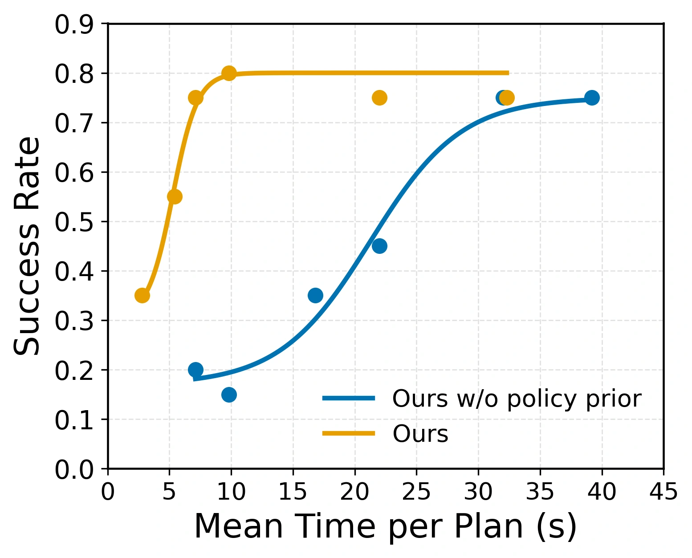
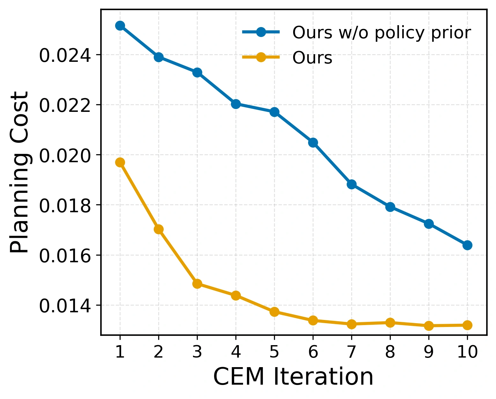
Controlled studies of task length, policy initialization, and the source of visual subgoals.
30 held-out initial states per length bucket. The prediction horizon stays fixed as task duration increases.
| Method | Short | Medium | Long |
|---|---|---|---|
| Flat WM | 33.3% | 0.0% | 0.0% |
| Flat WM + prior | 46.7% | 0.0% | 0.0% |
| Policy only 5 demos | 0.0% | 0.0% | 0.0% |
| Policy only 10 demos | 13.3% | 3.3% | 6.7% |
| Policy only 20 demos | 26.7% | 16.7% | 10.0% |
| Policy only 30 demos | 40.0% | 33.3% | 23.3% |
| PILOT w/o prior | 43.3% | 36.7% | 40.0% |
| PILOT Ours | 80.0% | 63.3% | 53.3% |
| PILOT (oracle) Expert subgoals | 90.0% | 93.3% | 83.3% |
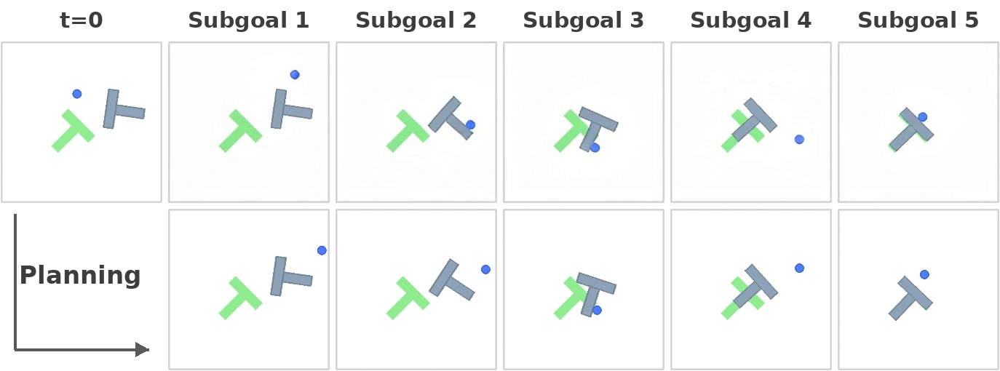
Even a weak prior improves the success–planning-time trade-off. The 30-demonstration prior exceeds 60% medium-task success at 8 seconds per planning call. Policy initialization reaches in four iterations the cost that generic initialization reaches in ten, and finishes 24.1% lower under the same sampling budget.
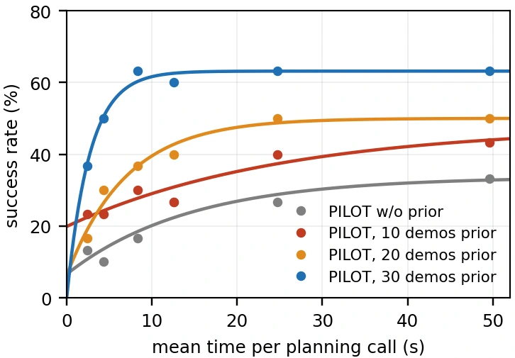
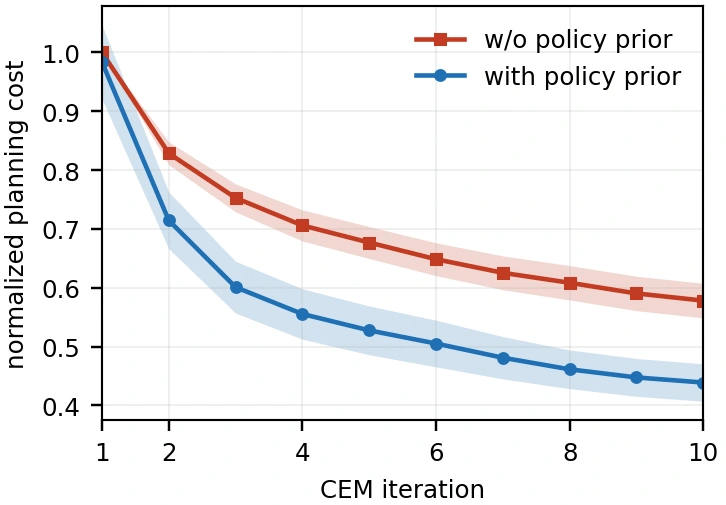
Short: expert episode length < 100 steps. Medium: 100–129. Long: ≥ 130. Wan uses 100 Push-T video demonstrations; the main policy prior uses 30 action demonstrations.
Ten language-conditioned, two-stage tasks on a Franka arm. Five held-out initial states per task, 50 trials per method.
| Method | Success rate |
|---|---|
| Flat WM | 0.0% |
| Flat WM + prior | 0.0% |
| Policy only | 38.0% |
| PILOT w/o prior | 22.0% |
| PILOT Ours | 60.0% |
| PILOT (oracle) Expert subgoals | 88.0% |
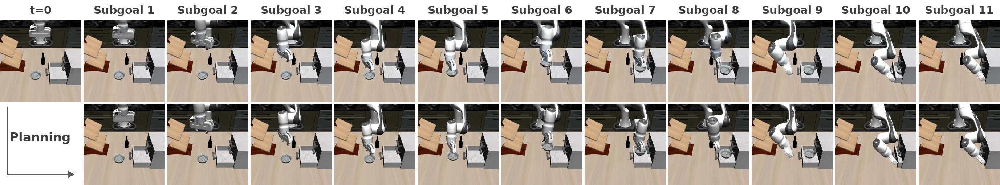
About the oracle reference. PILOT (oracle) replaces generated targets with frames from a held-out expert trajectory while keeping the policy, world model, and controller unchanged. It measures the effect of subgoal source and is not assumed to be a strict upper bound.
Anonymous manuscript. Citation details will be updated with the public release.
@misc{pilot,
title = {PILOT: Guiding Long-Horizon World-Model Planning
with Visual Subgoals and Policy Priors
for Robotic Manipulation},
author = {Anonymous},
note = {Manuscript}
}